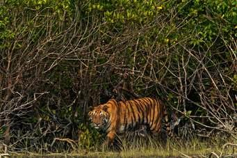

<p style="text-align: justify;">The sundarbans is the largest mangrove forest in the world &amp; one of the wildest ,least known environment in the Southern Asia,Located in the formed by the confluence of Ganga&rsquo;Brahmputra,and Meghna rivers in the bay of Bengal ,the Sundarban extends over an area of 10,000 sq km.Two third of the Sundarbans is located in Bangladesh and the rest is in India .The Sundarbans is the home of 104 Royal Bengal tigers,30,000 spotted Deer,35 species of reptiles etc.Hundreds of rivers,creeks and canals are the veins of the forest making it a pristine environment.</p>
